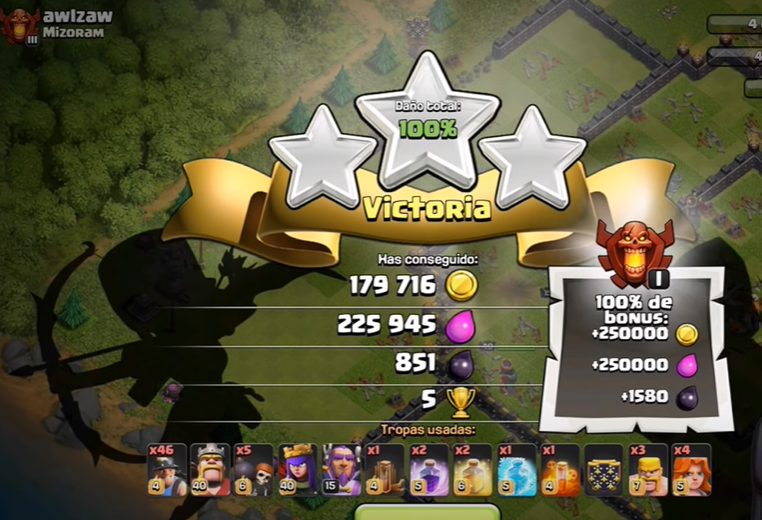

Como ya dijimos anteriormente para mejorar nuestra aldea como pueden ser las defensas o las tropas para poder potenciar las fuerzas con las que ataquemos, tendremos que realizar asaltos a otras aldeas de otros rivales, para asi poder obtener sus recursos. Para la realización de ataques tendremos un maximo de 3 minutos para poder destruir la aldea enemigas o que la aldea enemiga rechace a nuestras tropas

Para ganar estos ataques tendremos el objetivo de conseguir estrellas. Estas se consiguen de tres maneras, la primera consiste en destruir un 50% de la aldea enemiga, otra manera sera tumbando el ayuntamiento de la aldea y la tercera unicamente se obtiene al destruir el 100% de la aldea, siempre y cuando consigamos una de ellas ganariamos el ataque.
